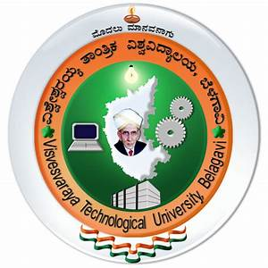

Visvesvaraya Technological University (VTU) is one of the largest Technological Universities in India with 16 years of Tradition of excellence in Engineering & Technical Education, Research and Innovations. It came into existence in the year 1998to cater the needs of Indian industries for trained technical manpower with practical experience and sound theoretical knowledge. University has very successfully achieved the tremendous task of bringing various colleges affiliated earlier to different Universities, with different syllabi, different procedures and different traditions under one umbrella.The university having 202 affiliated colleges, 1 constituent college and 17 Autonomouscolleges with undergraduate courses in 35 disciplines, PG program in 94 disciplines and Ph.D& M.sc(Engg.) with research programs in 592 departments, over4 lakhs Engineering Students study in the various institutes affiliated to the University. The University has 13 Quality Improvement Programme (QIP) centers in various affiliated colleges and 16 extension centers for offering PG programs.The University has revised the syllabus for UG and PG from the academic year 2014-15.It has four regional centers across the State of Karnataka in Belagavi, Bengaluru, Kalaburagi and Mysuru respectively.University is comprised of a multi-disciplinary and multi-levelinstitution offering wide ranging programmes in engineering, technology and Management. The University is making steady progress in developing and providing best technical environment for education and will continue to serve the nation in coming years. Equipped with the extremely rich resources of an outstanding student body and faculty strong partnerships with business, industry, and government and support from alumni and friends, VTU is designing a future of global preeminence, leadership, and service. VTU is the first university in the country to adopt Innovative steps in the examination reforms by adopting Digital Evaluation System in the year 2011-12 followed by online services like delivery of question papers to affiliated colleges (Question Paper Delivery System-QPDS), result announcement, photocopy availability, PG courses thesis valuation, Ph.D. thesis valuation and Examination Results announced on Mobile Phone through SMS.
